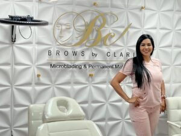

Meet Your Artist
Certified PhiBrows Microblading Artist · Founder of Brows By Clari · Orlando, FL

The Story
Clarimar Marin is a certified PhiBrows Microblading Artist, professional tattoo artist and licensed skin-care specialist in Orlando. As the founder of Brows By Clari, she brings over six years of hands-on experience in microblading, nanobrows, powder brows, lip blush and advanced facial skin care designed to enhance natural beauty.
Trained by internationally recognized masters, Clarimar combines precision, artistry and personalized skin-care expertise to deliver natural-looking, long-lasting results. Whether she's crafting flawless brows or a soft lip blush, her commitment to excellence makes her a trusted choice for permanent makeup in Orlando.
Book With ClariWhy Clients Choose Brows By Clari
Internationally certified PhiBrows artist with a licensed, professional background.
Every brow shape and pigment is custom-mapped to your features and skin tone.
Results that look like you — only more polished, refined and effortless.
Six-plus years and hundreds of happy clients across Central Florida.

Credentials
Your transformation starts here
Book your complimentary consultation with Clarimar and design brows or lips made just for you.